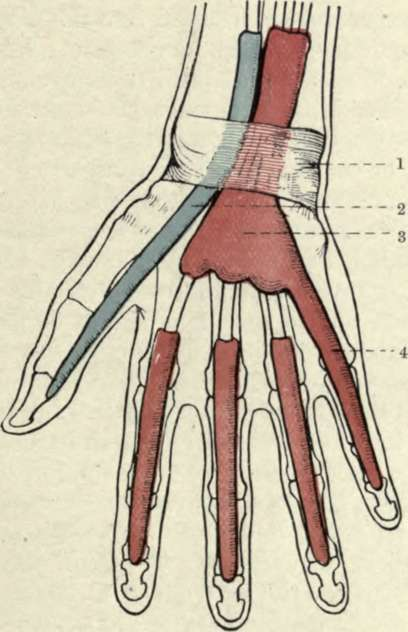

The Wrist And Hand. Surface Anatomy. Part 3
Description
This section is from the book "Surgical Anatomy", by John A. C. MacEwen. Also available from Amazon: Surgical Anatomy.
The Wrist And Hand. Surface Anatomy. Part 3
Dupuytren's contraction of the palmar fascia most frequently affects the slips to the ring and little fingers, producing flexion of these fingers and wrinkling of the overlying skin when an attempt is made to straighten the fingers. The central compartment of the palm is bounded superficially by the palmar fascia, deeply by the aponeurosis of the in-terossei muscles, and laterally, both at the thenar and hypothenar eminences, by the fusion of these two layers. Superiorly it narrows, and is continuous with the wrist under the anterior annular ligament, and interiorly it widens out, being continued along the fingers by the flexor tendon sheaths, while between the fingers it communicates with the subcutaneous tissue of the palm. It contains the superficial and deep tendons in their synovial sheaths, and the lumbricales muscles, the superficial palmar arch and its branches, and the median nerve and its terminal branches. Under the central compartment is a deep compartment, lying between the aponeurosis of the interossei muscles and the bones, which contains the interossei muscles, the deep palmar arch, and the deep division of the ulnar nerve.
The anterior annular ligament is attached to the tubercle of the scaphoid and ridge of the trapezium externally, and internally to the pisiform and hook of the unciform. Above it is continuous with the fascia of the forearm, and below with the palmar fascia. It forms a tunnel with the carpal bones for the passage of the flexor tendons and median nerve to the central compartment of the hand, and gives attachment to the short muscles of the thumb and little finger. The tendon of the palmaris longus expands in front of it, and it is crossed externally by the superficial volar branch of the radial, and on the inside by the ulnar artery and nerve.
The flexors sublimis and profundus digitorum have a common synovial sheath (great palmar bursa), which, commencing fully an inch above the annular ligament, extends down under it for about the same distance, and then sends short prolongations extending to the centre of the metacarpal bones along the index, middle, and ring finger tendons. Beyond this these tendons have separate sheaths in the fingers, which begin at the necks of the metacarpal bones, fully ¼ inch above the terminations of the others, and extend to the bases of the terminal phalanges. The sheath to the little fingei, on the other hand, generally goes direct to the base of the terminal phalanx, while the long flexor of the thumb has a separate sheath of its own, which commences in the forearm ¼ inch below the common sheath, and extends to the base of the terminal phalanx. Thus, a septic wound of the little finger is apt to produce a suppuration of the common synovial sheath, which might extend into the forearm, and cause impairment of movement of all the fingers. A septic wound of the thumb might also produce a lesion, extending up the forearm, but would only probably involve the thumb. A septic lesion of the index, middle, or ring fingers would probably produce a local condition, as these fingers have each a separate distal synovial sheath, which only extends up to the neck of the corresponding metacarpal bone, and does not communicate with the common sheath. Abscesses in these sheaths are sometimes referred to as thecal. Incisions for relief of abscesses may be made deeply in the middle line of the terminal phalanges ; and distal to the palmar arch, over the metacarpal of the index and ring fingers particularly, without danger of cutting vessels. The sheath of the common flexor tendon is not infrequently affected by chronic tubercular synovitis, extending both into the palm and up into the forearm, necessitating its free removal.
The tendons of the flexor profundus are inserted into the base of the terminal phalanges, having perforated the tendons of.the flexor sublimis, which are inserted into the sides of the middle phalanges. The tendons and their sheaths are enclosed in strong fibrous thece, which are best developed over the shafts of the two proximal phalanges of each fìnger, but which are thin over the joints, pus finding its way here into the sheaths. These sheaths gape when cut, unless care be taken to close them, and may permit access of septic matter. The tendons lying within the synovial sheaths are not free, but are attached to them by practically ' mesenteric ' folds, which carry the nutrient vessels to the tendons. Within the digital sheaths these folds are replaced by the ligamenta longa and brevia, which are situated near the insertions of the tendons. Rupture of the synovial sheaths may destroy the nutrient vessels of a portion of tendon, and is generally followed by effusion. As the synovial sheaths communicate freely with the surrounding lymphatics, septic absorption takes place rapidly from them.
Fig. 57.-The Great Palmar Bursa, and the Synovial Sheaths of the Flexor Tendons. (From Buchanan's "Anatomy.")
1. Anterior annular ligament. | 3. Great palmar bursa. |
2. Synovial sheath of thumb. | 4. Synovial sheath of little finger. |
The lumbricales arise from the outer edges of the tendons of the deep flexor, and are inserted into the fibrous expansion of the extensor tendons of the four fingers. A growth on the tendon or tendon sheath may limit the movement of a finger, preventing extension, and contractions of the finger may also result from contraction of the sheath, adhesion of the tendon to the sheath, or contraction of the muscles.
The ulnar artery, on reaching the palm, divides into superficial and deep branches, the former, with the superficial volar of the radial, forming the superficial arch, which lies in the central compartment of the hand, and gives off four digital branches, one to the ulnar border of the little finger, and the other three dividing ¼ inch above the webs to supply each side of two adjacent fingers. The deep branch of the ulnar sinks between the abductor and short flexor of the little finger to form the deep arch with the termination of the radial.
The radial artery passes from the front of the wrist below the styloid process, outwards over the external lateral ligament of the wrist, and under the extensores ossis and primi internodii pollicis, to enter the tabatiere, whence it passes between the heads of the first dorsal interosseous muscle to reach the palm. It gives off a posterior radial carpal to form the posterior carpal arch with the posterior ulnar carpal (from which arise the second and third dorsal interosseous arteries), the first dorsal interosseous artery, the dorsalis indicis, and dorsalis pollicis. As the artery is in close contact with the carpo-metacarpal joint, it is apt to be wounded in amputation of the thumb or excision of the first metacarpal. In the palm the artery forms the deep palmar arch with the deep branch of the ulnar, and gives off the arteria princeps pollicis, the radialis indicis, three palmar interossei, two or three recurrent branches to the anterior carpal arch, and three posterior perforating branches to the dorsal interosseous. The deep arch lies in the deep compartment under the flexor tendons and interosseous aponeurosis, its lower border corresponding to the upper border of the superficial. The anastomosis between the various vessels of the hand is so free that when a vessel is cut it is generally necessary to ligature both ends. It is often difficult to do this where the wound is of the punctured variety ; and where the deep palmar arch has been wounded, it has been suggested to reach it from the dorsal aspect of the hand by resecting the proximal portion of the third metacarpal bone. The anterior and posterior carpal arches communicate with one another, with the interosseous vessels, and with the deep palmar arch ; while the two palmar arches, besides being in direct communication, anastomose through the digital branches of the superficial arch, and the palmar interosseous of the deep arch, which form a rich plexus in the pulp of the fingers. Pressure applied to the palm for arrest of haemorrhage may, nevertheless, lead to gangrene. The lymphatics of the fingers are numerous and large, and lymphangitis frequently follows septic wounds.
The posterior annular ligament lies higher than the anterior, and runs obliquely from without inwards. It consists of a thickening of the deep fascia, and is attached externally to the radius and internally to the cuneiform and pisiform bones and palmar fascia. It sends in processes to the underlying bones by which six compartments are formed for (1) extensores ossis and primi internodii pollicis ; (2) extensores carpi radialis longus and brevior ; (3) extensor longus pollicis ; (4) extensor indicis and communis digitorum ; (5) extensor minimi digiti ; (6) extensor carpi ulnaris. These tendons lie on the posterior ligament of the wrist-joint, which is very thin, and frequently permits small protrusions of synovial membrane from the wrist-joint. The synovial tendon sheaths commence slightly above the annular ligament, while interiorly they are variously described either extending as shown in Fig. 58, or as follows : Below, all the sheaths extend to the insertions of the tendons, except (1), which extends to the first carpo-metacarpal joint, and (4) and (5), which extend to the middle of the metacarpus. As these sheaths are injured in Colles' fracture, fixation of the fingers is apt to occur (unless prevented by passive movement) from adhesions between tendons and sheaths. Ganglion is a cystic protrusion of the tendon sheaths of the back of the hand or of the carpus which may be treated by subcutaneous rupture or small incision.
Continue to: